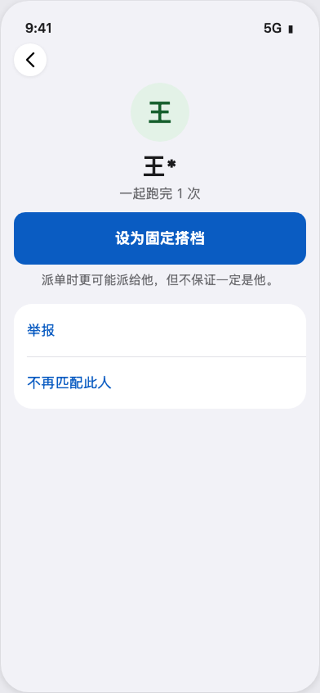
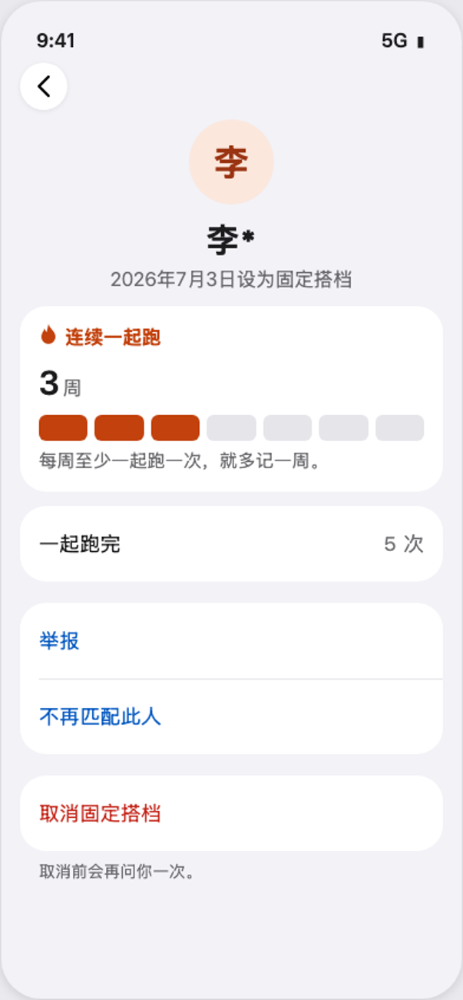

现在真机，从上往下滑四屏。绿色卡下面一共 12 块，要滑三屏多才到底。

定稿只留绿色卡，下面留空（负责人 11-07 选 A）。跑完当场停在这一页时，评价要回首页 → 记录 → 点这一次去评。
issue #831（母 issue #827 第 2 项）。2026-11-07 出稿，同日负责人看 v1 后定：订单页选 A；评价放跑步详情最后、在「陪跑员」下面；去掉「陪跑订单」那一行；举报 / 不再匹配此人收进这个人的页面。还没写代码（等 #819、#830 合并）。 「现在」一栏全是真机截图（iPhone，Mock 数据，UI 测试构建没有高德 key，所以地图处是「地图服务暂不可用」；Mock 里绿色卡 0.82 公里与详情页 3.20 公里对不上是 Mock 数据本身的问题，不是界面问题）。 「改后」里的绿色卡与跑步详情页上半截是真机截图原样裁出来的，只有新加的块是画的。按钮照 #749 定稿：胶囊，一屏只有一个实心。
绿色卡排版完全不动（截图原样）。去掉的是绿色卡下面整串：服务已完成 · 本次路线 · 重复当前状态（导航栏右上的喇叭就是它，功能不丢）· 这次陪跑怎么样 · 语音输入 · 提交评价 · 跳过评价 · 设为固定搭档 · 举报 · 不再匹配此人 · 预约信息 · 状态变更记录。底部「完成」「求助与安全」不动。
路线下面依次是「陪跑员」「这次陪跑怎么样」，页面到此结束。原来露在外面的「订单详情与评价」「举报」「不再匹配此人」三行都去掉：举报和不再匹配此人在这个人的页面里（③），跑步详情不再跳订单页。 「设为固定搭档」照固定搭档页定稿：头像 + 名字 + 状态，浅蓝描边胶囊（#749）；「提交评价」是这一页唯一的实心按钮。评价规则不变：没评过可以补评一次，评过只显示结果、不能改；五档默认一项都不选，读屏念档名不念分数。

就是「我的 → 固定搭档」里点进一个人看到的那一页（blind-partners-20261105/ 定稿，已上线），举报、不再匹配此人在里面，已是搭档时还有「取消固定搭档」。下面两张是那份定稿的原图（人名是那份稿的示例）。

